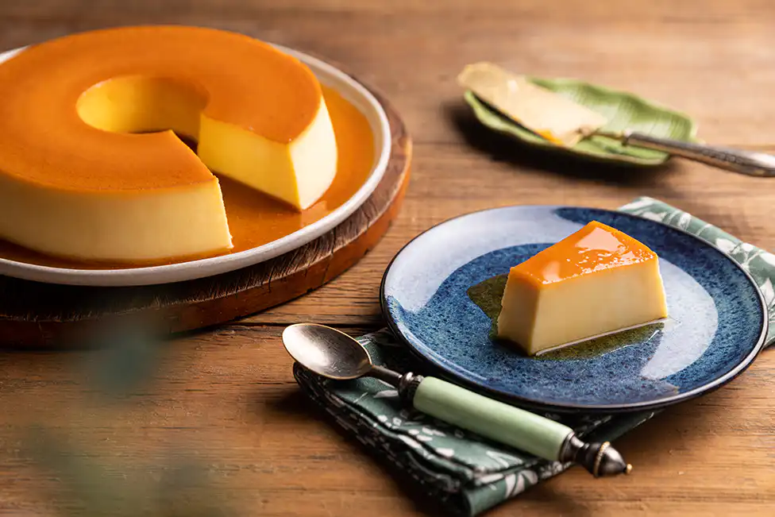

PUDIM
COMO FAZER?

INGREDIENTES:
PUDIM:
1 lata de leite condensado
leite
1 lata de leite (medida da lata de leite condensado)
3 ovos inteiros
CALDA:
1 xícara (chá) de açúcar
água
1/2 xícara de água
MODO DE PREPARO:
- Numa forma para pudim, de 20 centímetros de diâmetro, coloque 6 colheres de sopa de açúcar e leve ao fogo médio até virar uma calda caramelada, por mais ou menos 3 minutos.
- Retire do fogo e vá virando a fôrma, de modo que a calda forre todo o fundo e lateral da mesma. Reserve.
- Num liquidificador coloque uma lata de leite condensado, uma lata de leite, a mesma medida da lata de leite condensado, e 3 ovos e bata bem por mais ou menos 1 minuto.
- Desligue o liquidificador e deixe a mistura descansar por 15 minutos.
- Com esta espera a espuma fica sobre a superfície, o pudim fica sem furinhos, mas macio.
- Com a ajuda de uma colher segure a espuma que está na superfície e despeje o conteúdo do liquidificador, com cuidado, na fôrma caramelada reservada acima e leve ao forno médio, em banho-maria, a 180 graus Celsius por uma hora e meia.
- Retire do forno, deixe esfriar e leve à geladeira por mais ou menos duas horas. Desenforme e sirva em seguida.